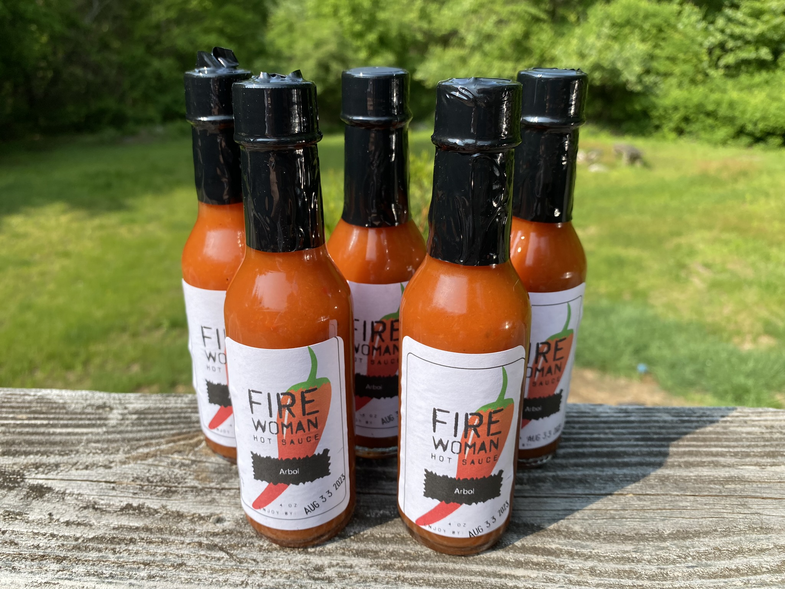

Welcome to my Blog page. Here I practice documenting my various activities and methods. Enjoy.
Fire Woman: Arbol Chili Hot Sauce
So, I've been making my own hot sauce. Fun, and now I never need to buy hot sauce again! Although I probably will. Especially if I travel abroad because there's nothing like trying the local hot sauce on your breakfast eggs. So this weeks hot sauce is an arbol chili sauce, with tomatoes, onions, and garlic.

I used 20 arbol chilis and let them soak for an hour in a bowl of warm water. They actually needed to soak longer than that and I ran out of time so then I boiled them in some water for about 5 minutes which plumped them up right away.

Meanwhile, I mixed up the onions and tomatoes with some oil, salt, and pepper and placed them on some foil to grill. I then cut off the top of an entire head of garlic and poured a little olive oil over it before placing in foil to grill as well.

After everything is cooked, I blended together in the food processor, added vinegar, and voilà! Delicious hot sauce. I forgot to continue taking photos of the process so unfortunetatly all you get to see now is the end result.
Always feel free to reach out to me if you are interested in purchasing any hot sauce! They run at $5 a bottle + shipping.
Homemade Buffalo Chicken Calzone

Lately I've been craving homemade buffalo chicken wraps. I made one recently that came out absolutely delicious. It had buffalo chicken, of course, which I chopped up then tossed with salt, pepper, and Frank's Buffalo Sauce and fried up. Alternatively, I tossed it up before dicing it up, grilled it, and then tossed with more Frank's afterwards.
Anyway, this got me thinking, what else do I enjoy ordering out for lunch when I'm at work? Buffalo chicken calzones. So why not make my own? I did just that, that they came out... Ok. lol. Nah, they came out pretty good, I just wish they had browned a little better in the oven. Maybe next time I will grill the entire calzone! - That would be interesting.
I did a quick search on youtube to find a basic buffalo chicken calzone recipe. That link is here , and the website is here; All Things Barbeque.
So, first things first I made the calzone stuffing. After cooking up the chicken, I mixed it with blue cheese crumbles, some shredded italian cheese mix, grated parmesian, (I forgot mozerella), but basically throw in whatever cheeses you desire - just don't forget the blue cheese!
I also made the pizza dough from scratch using the pizza dough recipe from Bread Machine Magic. That link goes to Amazon where you can buy the paperback for $17, but if you are actually interested in buying the book it is available for $4.59 here. I threw the ingredients into my bread machine and let it go. I let it rise in there for a couple hours before removing and breaking into 5 balls of dough, which I then let rise again for an hour or so (I set oven on warm for a minute then turned off, placed the balls on trays and covered with parchment paper.
Then comes the stuffing and folding. Roll out the dough into a circle, place chicken stuffing in center / on one side and fold over the dough. Pinch the sides down and fold over the edges inward. What you could then do, which I didn't, is use a fork to crimp along the edge.
Final step - use a knife to slice open the top of the calzone. This helps let moisture escape as it's cooking and creates an official look and BAM! It's ready to go in the oven @450°F. I cooked them for 15 minutes and then another 7 minutes. (I actually found a recipe online that said to cook at 475°F for up to 18 minutes, which may be why mine turned out so pale.)